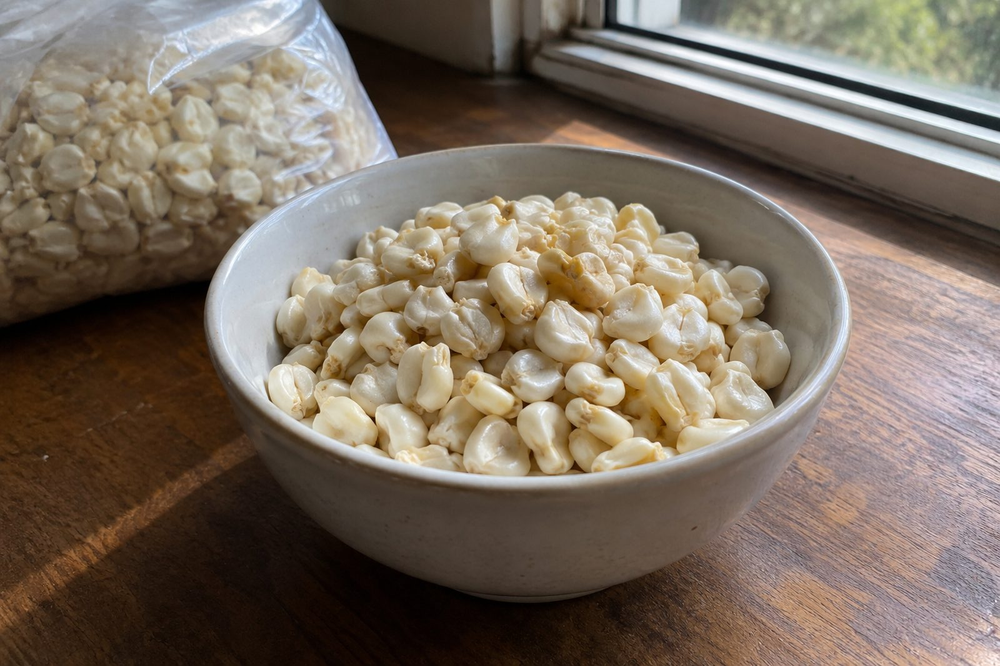

Welcome To
Dumela Press
International Chef, Cookbook Author, & Food Writer
I'm an International Chef and cookbook author who helps culinary brands and food publications tell compelling stories — from cutting-edge industry trends to the cultural roots behind great food.
Meet The Author
I'm a professional chef, cookbook author, and food writer based in the San Francisco Bay Area with a deep connection to East Africa. Food has always been my love language. I've spent years in kitchens out on grills, and long nights being kept warm by offset smokers mastering my craft, building a catering brand, and documenting the stories behind the dishes I cook and love. That same intimacy with storytelling is what drives my writing, I don't just describe food, I trace where it comes from, what it means to the people who eat it, and why it matters. My passion for food is worldwide, but I have a special interest in East African food culture, the flavors, traditions, and histories that don't get enough space in mainstream food media. From Fish and Ugali in Kisumu along the Lake Victoria shores, to Githeri and Chapati at the foot of Mount Kenya, Matoke in Kisii, and great Seafood on the Kilifi coast, these are stories worth telling, and I tell them from the heart, through the people who have cooked these meals for generations, eaten them with loved ones, and built brands selling these foods within their communities to those that have taken their family's recipes to international locations. I'm building my life around these dishes and documenting the journey. I write for culinary brands, food publications, and businesses that want content with real depth, not generic copy, but writing that makes people feel something. If your brand has a story worth telling, let's talk.
Selected Works
Writing Portfolio
Selected works in food culture, brand storytelling, and culinary narrative.

The Maize Was Inherited
I learned masa from my neighbor's mother and ugali from a phone. Then I went looking for how an American grain became Kenya's staple, and found a ration.
Read More: The Maize Was Inherited
The Prawns Had to Travel
A firecracker shrimp dish broke my restaurant's farm-to-table philosophy before the building exists. The prawns come from 830 kilometers away.
Read More: The Prawns Had to Travel
Between Kenya and My Cupboard
Kenya is one of the world's largest tea exporters. Almost none of it reaches American shelves with that word on the label. Here's why.
Read More: Between Kenya and My CupboardGet In Touch
Let's Cook Something Up
Let's Create A Great Story For Your Brand